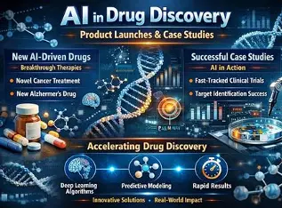

INDIA'S HEALTHCARE FUTURE
India is exploring artificial intelligence to support medical research, drug discovery, and personalized medicine. AI technology may also help improve healthcare services across different communities.
INDIA AND AI
Artificial intelligence has the potential to support India's healthcare system by helping researchers study diseases, analyze medical information, and explore new medicines. These technologies may improve medical research and help healthcare professionals make informed decisions. However, proper testing, privacy protection, and medical supervision are important when using AI in healthcare.
INDIA'S AI DEVELOPMENTS

AI can help Indian researchers study chemical compounds and identify possible new medicines. It can also help analyze large amounts of scientific information.
AI can help analyze patient information, genetic data, and medical records to support more personalized healthcare decisions.
AI tools and telemedicine may help healthcare professionals support patients in rural and underserved areas of India.
THE FUTURE
Artificial intelligence may create new opportunities for India's healthcare system. It could support medical research, help identify health risks, and improve access to healthcare information. Responsible development, data privacy, and human medical supervision will remain important for successful use of AI technology.
FURTHER READING
Explore India's official healthcare information and government initiatives.
Visit Ministry of Health